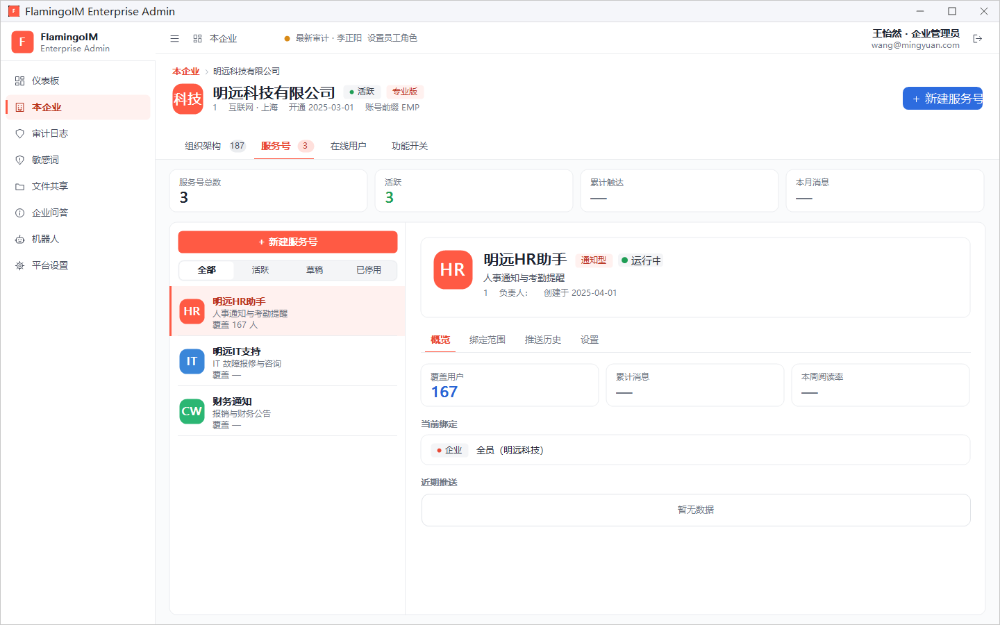
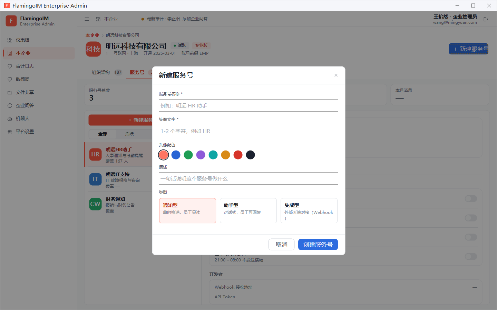
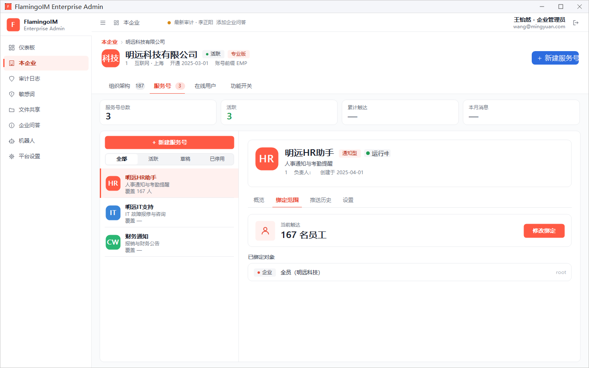
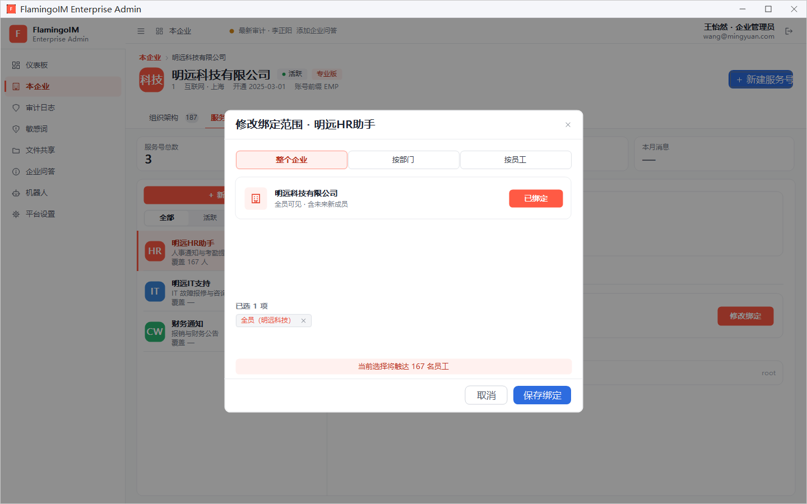
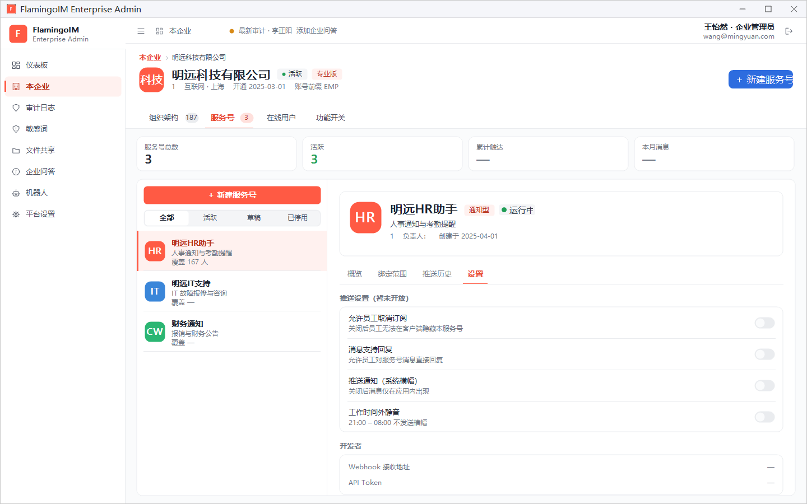

服务号
服务号是企业向员工推送通知的官方账号，例如「明远HR助手」「财务通知」。员工在客户端联系人页签的「服务号」分组里看到它们。本章介绍如何新建服务号、决定哪些员工能看到它，以及停用和删除服务号。
- 适用：企业管理员
- 位置：左侧导航「本企业」→「服务号」页签
服务号列表
在「本企业」页面切到 服务号 页签。此时页面右上角的主按钮变为 + 新建服务号。

- 统计卡：服务号总数、活跃、累计触达、本月消息。其中累计触达与本月消息目前暂无统计，显示为「—」。
- 左侧列表：上方的 全部、活跃、草稿、已停用 用于按状态筛选；每个服务号显示名称、描述和覆盖人数（如「覆盖 167 人」，尚未绑定时显示「覆盖 —」）。
- 右侧详情：头部显示服务号的头像、名称、类型（如 通知型）、状态（运行中、草稿 或 已停用）和描述；下面分为 概览、绑定范围、推送历史、设置 四个页签。
「概览」页签显示 覆盖用户（能看到这个服务号的员工数）、当前绑定 和 近期推送；累计消息 与 本周阅读率 目前暂无统计，显示为「—」。
新建服务号
点页面右上角或列表上方的 + 新建服务号，打开新建对话框：

- 填写 服务号名称（必填），例如「明远 HR 助手」。
- 填写 头像文字（必填）：1~2 个字符，例如
HR，显示在服务号的头像上。 - 在 头像配色 中点选一种底色。
- 在 描述 中用一句话说明这个服务号做什么。
- 选择 类型，三种类型的区别见下表。
- 点 创建服务号。
| 类型 | 说明 |
|---|---|
| 通知型 | 单向推送，员工只读 |
| 助手型 | 对话式，员工可回复 |
| 集成型 | 外部系统对接（Webhook） |
新建后记得绑定范围刚建好的服务号还没有绑定任何对象，概览页会提示「尚未绑定任何对象，员工不会看到此服务号」。请接着按下一节设置绑定范围。
绑定范围：决定谁能看到
绑定范围决定哪些员工的客户端里会出现这个服务号。切到 绑定范围 页签，上方显示 当前触达 的员工数，下方的 已绑定对象 列出每一项绑定，左侧标签表示绑定方式（企业、部门或员工）。

要修改时点 修改绑定，打开「修改绑定范围」对话框：

- 在上方选择绑定方式：整个企业、按部门 或 按员工。
- 在列表中点对象右侧的 绑定，按钮变为 已绑定。选择「整个企业」时只有一项，表示全员可见，以后新加入的员工也能看到。
- 选中的对象汇总在 已选 N 项 下方，点某一项右侧的 × 可以移除。
- 核对底部的「当前选择将触达 N 名员工」，确认人数符合预期。
- 点 保存绑定。
某位员工到底能看到哪些服务号，也可以在员工详情的「服务号」页签中反过来查看。
推送历史
「推送历史」页签用于查看服务号发过的消息。这项功能目前暂无数据来源，页签里显示「暂无数据」；概览页的「近期推送」也是如此。
设置、停用与删除
切到 设置 页签：

- 推送设置（暂未开放）：允许员工取消订阅、消息支持回复、推送通知（系统横幅）、工作时间外静音 四个开关。这些开关目前不能修改。
- 开发者：Webhook 接收地址 和 API Token，用于以后与外部系统对接。目前尚未开放，两项都显示为「—」。
- 危险操作：位于页签底部，见下表。
| 操作 | 效果 |
|---|---|
| 停用服务号 | 停用后它不再向员工推送消息，历史消息保留。停用之后这一项变为 重新启用服务号，点 启用 即可恢复。 |
| 删除服务号 | 永久删除，所有员工客户端将立即移除此服务号，操作不可撤销。 |
暂时不用时先停用如果以后还可能用到这个服务号，建议停用而不是删除。两项操作都会先弹出确认框。